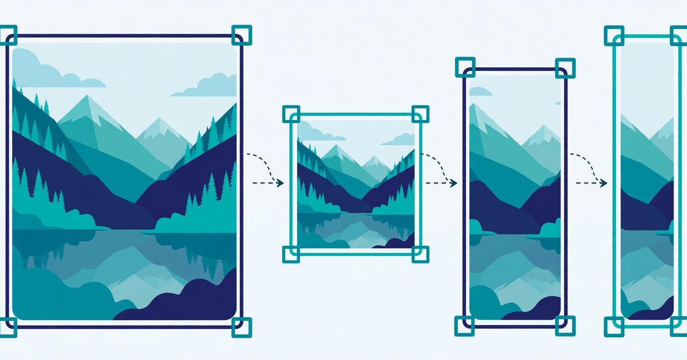

How to Resize an Image for Instagram Online
Exact Instagram sizes — square, portrait, landscape and story — from any photo, in seconds.
November 23, 2026 · 6 min read

To resize an image for Instagram, open the free Image Resizer, upload your photo, type 1080 as the width with Lock aspect ratio switched on, and download it. A square post needs 1080 × 1080 pixels, a portrait post 1080 × 1350, and a story 1080 × 1920. That is the whole job — but only if you understand one thing first: resizing changes the size of a photo, not its shape. Instagram crops or squeezes anything that does not match its frames.
Instagram's image sizes, at a glance
Instagram accepts many sizes, but these are the ones it displays best. Upload at exactly these dimensions and Instagram has nothing left to crop, so your photo looks the way you made it.
| Where it appears | Size (pixels) | Shape |
|---|---|---|
| Square post | 1080 × 1080 | 1:1 |
| Portrait post | 1080 × 1350 | 4:5 |
| Landscape post | 1080 × 566 | 1.91:1 |
| Story or reel cover | 1080 × 1920 | 9:16 |
| Profile photo | 320 × 320 | 1:1 |
Notice the pattern: every size is 1080 pixels wide except the profile photo — sharp on a phone screen, yet small enough to upload fast. A phone photo is typically 4032 × 3024 pixels, so resizing to 1080 wide is a big shrink.
What the Image Resizer does
The Image Resizer changes a photo's pixel dimensions in your browser — nothing is uploaded anywhere. Pick a file, type the width and height you want, and download the result. The format is kept: PNG stays PNG, WebP stays WebP, and anything else is saved as JPG at quality 0.92, with transparent areas filled white.
Lock aspect ratio is on by default: type a width and the height fills itself in, so proportions are kept. The quick presets (25%, 50%, 75%, 100%) shrink or restore the photo by a percentage in one tap — a 4032 × 3024 photo at 50% becomes 2016 × 1512, a quarter of the original pixels. Sizes run from 1 to 8000 pixels — anything above 8000 is refused with a plain message.
Resize for Instagram in 5 steps
- Open the Image Resizer and choose your photo. Its original dimensions appear straight away, for example "Original: 4032 × 3024 px (JPEG)."
- Decide which Instagram size you need from the table above. These steps assume the shape already matches; if it does not, crop first (see the worked examples).
- Type the width. For a post or story this is 1080. With Lock aspect ratio on, the height fills in by itself — check it matches the size you want.
- Press Resize & download. You get a preview plus the original size, the new size, and the format kept. An empty field, or a size above 8000, gets a plain message instead of a guess.
- Download the resized image. The file is named after your original, for example beach-1080x1080.jpg.
Worked example 1: a square post from a 4032 × 3024 photo
A typical phone photo is 4032 × 3024 pixels — a 4:3 rectangle, not a square. With Lock aspect ratio on, type width 1080 and the height fills in as 1080 × 3024 ÷ 4032 = 810. You get a 1080 × 810 photo: the right width, but still 4:3.
That is the key lesson. Resizing alone cannot turn a rectangle into a square — it can only shrink the rectangle. To get a true 1080 × 1080 square, crop the photo to a square first with the Image Cropper (a 3024 × 3024 square from the middle of the original), then resize that square to 1080 × 1080.
The shrink is large: 4032 × 3024 is 12,192,768 pixels, while 1080 × 810 is 874,800 — about 7.2% of the original, or roughly 14 times fewer pixels.
Worked example 2: a portrait post, 1080 × 1350
Start from a portrait phone photo, 3024 × 4032 pixels (3:4). With Lock aspect ratio on, type width 1080 and the height becomes 1080 × 4032 ÷ 3024 = 1440. Instagram's portrait frame is 1080 × 1350, a slightly wider 4:5 shape, so this photo is 90 pixels too tall and Instagram would trim the top and bottom.
To hit 1080 × 1350 exactly, crop first: from the 3024 × 4032 original, crop to 3024 × 3780 (3024 × 5 ÷ 4 = 3780). Then resize with the lock on — width 1080 gives height 1080 × 3780 ÷ 3024 = 1350. Exact. The 4:5 portrait is the tallest post in the feed, so it suits a subject that fills the frame vertically.
Worked example 3: a story, 1080 × 1920
Stories are tall: 9:16. From the same 3024 × 4032 portrait photo, crop to 9:16 first — height 4032 gives width 4032 × 9 ÷ 16 = 2268, so crop to 2268 × 4032. Then resize: width 1080 gives height 1080 × 4032 ÷ 2268 = 1920. Exact. Skip the crop and Instagram stretches or pads the 3:4 photo to fill the frame — either way, it looks wrong.
6 mistakes that ruin an Instagram resize
- Turning Lock aspect ratio off. With the lock off, typing 1080 × 1080 for a 4:3 photo stretches it sideways — faces get wide, circles become ovals. Keep the lock on unless you are deliberately distorting an image.
- Resizing when you meant to crop. Resizing changes size, never shape. If the shape is wrong for the frame, crop first with the Image Cropper, then resize.
- Upscaling a small image. A 320 × 320 photo stretched to 1080 × 1080 is 3.375 times wider on each side, and the tool cannot invent the missing detail — it just looks soft. Start from the highest-resolution original you have.
- Uploading the full-size original. A 4032 × 3024 photo forces Instagram to do the shrinking, and its compression is harsher than yours. Resize to 1080 wide first and you control the result.
- Forgetting a PNG stays a PNG. Screenshots saved as PNG keep that format after resizing, and PNG files are much larger than JPG for photos. Convert the result with the Image Format Converter before uploading.
- Typing a size above 8000 pixels. The tool refuses widths or heights over 8000 — a deliberate limit, not a bug. Instagram never needs more than 1080 wide.
Frequently asked questions
What size should an Instagram post be?
A square post is 1080 × 1080 pixels, a portrait post is 1080 × 1350, and a landscape post is 1080 × 566. Type 1080 as the width with Lock aspect ratio on, and crop first if the shape does not match.
What size is an Instagram story?
1080 × 1920 pixels — a 9:16 vertical frame. Crop your photo to 9:16 first, then resize it to 1080 wide and the height lands on 1920.
Will resizing stretch my photo?
Not with Lock aspect ratio on: the tool keeps your photo's proportions and only changes its size. For a different shape, crop first with the Image Cropper, then resize.
Does the tool upload my photos anywhere?
No. Everything runs in your browser — your photos are never uploaded to a server.
Related tools: Image Resizer · Image Cropper · Image Compressor · Image Format Converter · YouTube Thumbnail Downloader